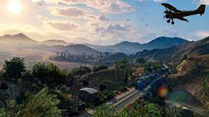

General information
Grand Theft Auto V (also known as Grand Theft Auto Five, GTA 5, GTA V, or GTAV[2]) is a video game developed by Rockstar North. It is the fifteenth installment in the Grand Theft Auto series and the fifth game in the HD Universe title of the series. Grand Theft Auto V is set circa 2013 in the city of Los Santos and its surrounding areas and tells the stories of three protagonists: Michael De Santa, Franklin Clinton, and Trevor Philips. It takes place about five years after the events of Grand Theft Auto IV, and four years after the events of Grand Theft Auto: Chinatown Wars. The original edition was released on September 17th, 2013 for the Xbox 360 and PlayStation 3. The Xbox One and PlayStation 4 "enhanced" versions were released on November 18th, 2014, and was later released on April 14th, 2015 for the PC. A further "expanded and enhanced" version for the PlayStation 5 and Xbox Series X is slated for release on March 5th, 2022. [3] The original edition was officially announced on October 25th, 2011; the game's first trailer[4] was released on November 2nd, 2011. The game was initially slated for a Spring 2013 release and there were even posters printed saying this but was actually released in the northern hemisphere Fall the same year. On July 15th, 2013, Rockstar announced the Japanese release date for the game would be October 10th, 2013, which ended up being almost a month after it was released in the Western world.[5] The "Enhanced" edition for PlayStation 4, Xbox One and Personal Computer was announced on June 9th, 2014, with pre-orders made available on June 10th, 2014. An "Expanded and Enhanced" version for PlayStation 5, Xbox Series X/S and PC was initially announced for "late 2021" on June 11th, 2020 and a firm release date of March 2022 was announced on May 19th, 2021. As one of the most eagerly-awaited video game titles to be released in 2013, the game was widely anticipated prior to its release. Grand Theft Auto V was released to universal acclaim, holding scores of 96 and above on MetaCritic and GameRankings, as well as receiving perfect scores from over 30 reviewers. The game sold 11,210,000 copies and grossed $800,000,000 on its first day of release, setting many records, and eventually making $1,000,000,000 within 3 days of the game's release.
Gameplay
Grand Theft Auto V evolves nearly every mechanic that was in the previous Grand Theft Auto games. As far as driving goes, the vehicles have been greatly improved, with Rockstar running more complex physics on them, such as making some cars hold to the ground slightly better. The driving mechanics feel more like a racing game, particularly the Midnight Club series, compared to Grand Theft Auto IV's rocky, boat-like handling system. The shooting mechanics are better in terms of the feel of the mechanics and larger compared to the melee mechanics in the game, that being said, melee has been improved over the previous titles as well. Weapon selection has now also been changed. Instead of the old way of selecting through all the weapons sequentially, there is now a Weapon Wheel, which is similar to the one featured in Red Dead Redemption, another game made by Rockstar Games. Grand Theft Auto V draws inspirations from many different Rockstar titles in the past, including Max Payne 3, Midnight Club, Manhunt, and Red Dead Redemption. Switch Scene cutscene. Each of the three protagonists are living their own lives while the player acts the part of another. There are many unique features in the game; one being that when the players are playing as one of three protagonists in the game, the other two are living their independent daily lives, and the player may be surprised by what they find the characters doing when they switch back into them. Another unique feature is that the character swapping feature is executed in a Google Earth-styled manner and was displayed during a Game Informer demo, which was shown to have run smoothly and without lag. The PC, PlayStation 4 and Xbox One versions present an exclusive feature, the first-person mode, where the whole game can be played through the eyes of the protagonist. This gameplay mode presents a whole new way to play the game. Cars have detailed interiors different from one another; shooting is like that of a dedicated FPS game. Yoga, a new activity appearing in GTA V. New activities have been added, such as yoga, triathlons, jet skiing, parachuting, tennis, golf, and scuba diving. Random events have also been added to the game and can appear anytime as the player explores around the map. The mobile phone has returned from Grand Theft Auto IV and is used for calling the player's contacts, surfing the web, and quick saving. Giving people the middle finger is another new feature the player can use while in a vehicle. Rockstar recommended that the player do this in various locations around Los Santos to see the outcome; depending on where the player is at, they will get varied reactions from pedestrians. Rockstar has also made changes to the pedestrian mechanics; some pedestrians can be seen at the bus stops in East Los Santos, and the same people can reappear in Rockford Hills working in the gardens of the opulent mansions. Some minor mechanics that help convey the environment and appearance of Los Santos occur at certain times of day, such as a sprinkler system being turned on in the morning in wealthy areas like Morningwood.
Gta V online
Grand Theft Auto Online is a multiplayer game title considered a separate game by Rockstar that is included with the retail copy of Grand Theft Auto V. In Grand Theft Auto Online, the player will have the freedom to explore alone or with friends, work cooperatively (PvE) to complete missions, band together to participate in activities and ambient events, or compete (PvP) in traditional game modes and in Free Mode with the entire community. Initially, the online game shared the same San Andreas map as Grand Theft Auto V. This was later expanded to include the island of Cayo Perico. The game shares some achievements and mechanics originally from GTA V. In GTA Online, multiplayer crews from Max Payne 3 can be carried over to GTA Online. GTA Online has multiplayer features linked to Rockstar's Social Club. Sessions can accommodate up to sixteen people on Xbox 360 and PlayStation 3, and thirty players on the Xbox One, PlayStation 4 and PC versions. A completely standalone version of GTA Online was announced June 11th, 2020 for PlayStation 5, Xbox Series X and PC. This is due for release with the "Expanded and Enhanced" version on March 2022, and will be exclusively free on PlayStation 5 for the first three months.
Timeframe
Although it is not specifically stated when exactly in 2013 the game takes place, the following evidence suggests August - October 2013: There's an advertisement on the side of a strip mall in Davis stating that it's having a "Summer Sale on flat-screen TVs". The calendar in Trevor's trailer is open on the month of August. When Michael meets Lester to come out of retirement, the calendar in Lester's House shows September. After Franklin moves into 3671 Whispymound Drive, a bank statement is opened on his entry sideboard. Close inspection in the enhanced version reveals it is his September statement for transactions in August. During the mission "Cleaning out the Bureau", a calendar briefly seen in Harvey Molina's apartment is also open on the month of September. Towards the end/completion of the storyline, one of the barbers in Sandy Shores might comment on how it is "October already". Some houses have pumpkins on their front porches. Pumpkins are rarely seen at any time of the year other than autumn. In the enhanced edition of the game, the text message that the creators of Space Monkey 3D send the player after completing Monkey Mosaics state that the film would be coming out in the holiday season, this again suggests that the story would take place in late-summer to fall.